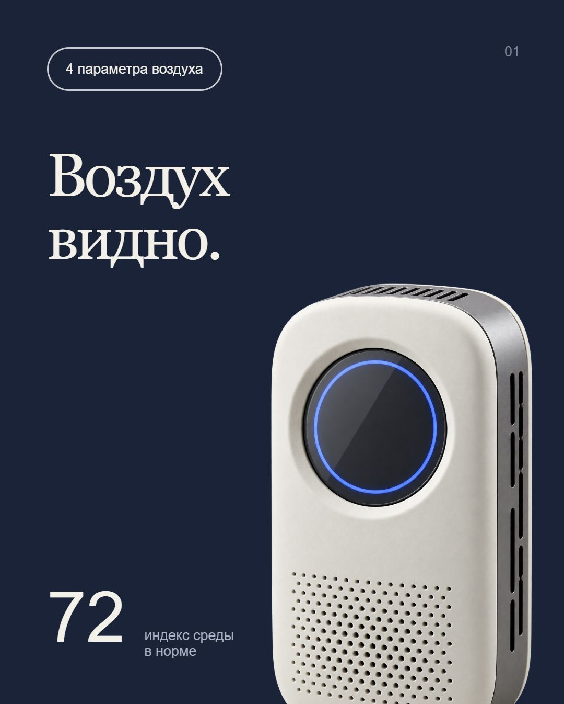
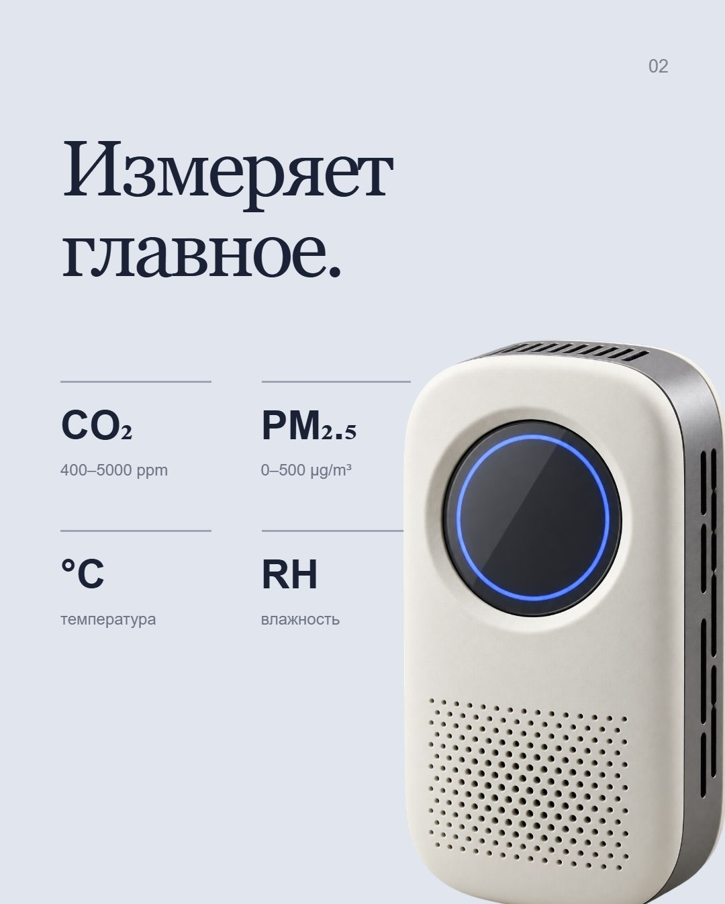
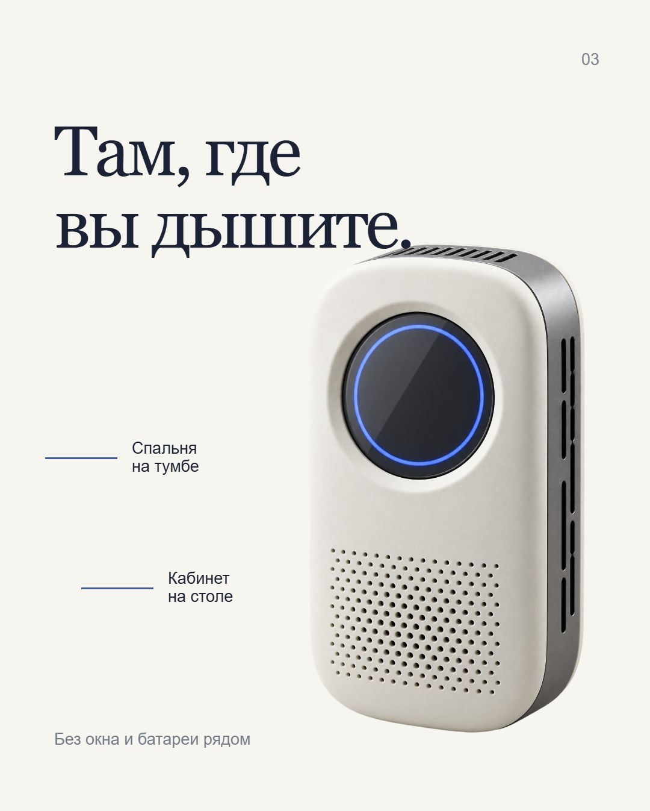
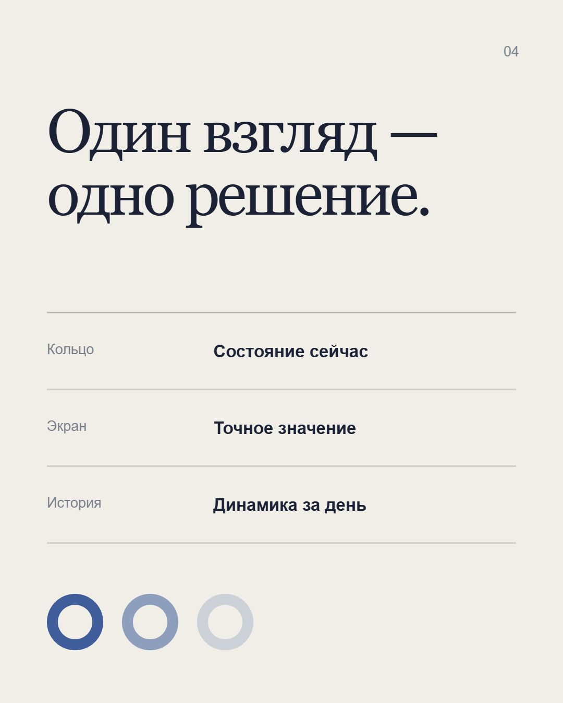
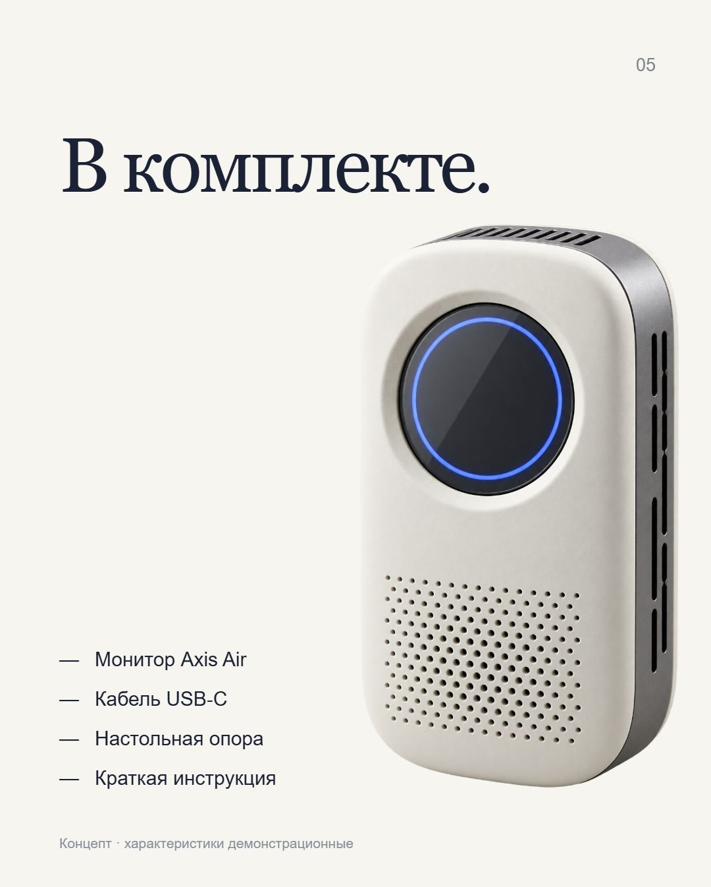

Контент существовал,
но оставался скрытым.
Фиксированные карточки уходили вправо. На телефоне не было ни позиции, ни подсказки продолжения, ни предсказуемой остановки.
Разбираем один реальный дефект: карточки продолжались за экраном, но интерфейс этого не объяснял.
Пять карточек одной серии





Листайте серию
Фиксированные карточки уходили вправо. На телефоне не было ни позиции, ни подсказки продолжения, ни предсказуемой остановки.
Добавлены snap-позиции, счётчик, стрелки, клавиатура и лёгкая подсказка следующего кадра. Сами коммерческие карточки не менялись.
390 px
край виден
1440 px
стрелки доступны
← →
клавиатура
01 / 05
позиция объявлена